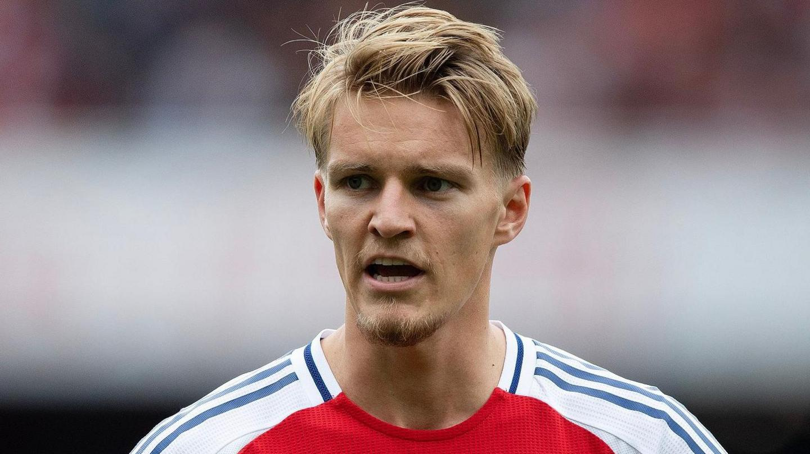
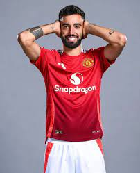
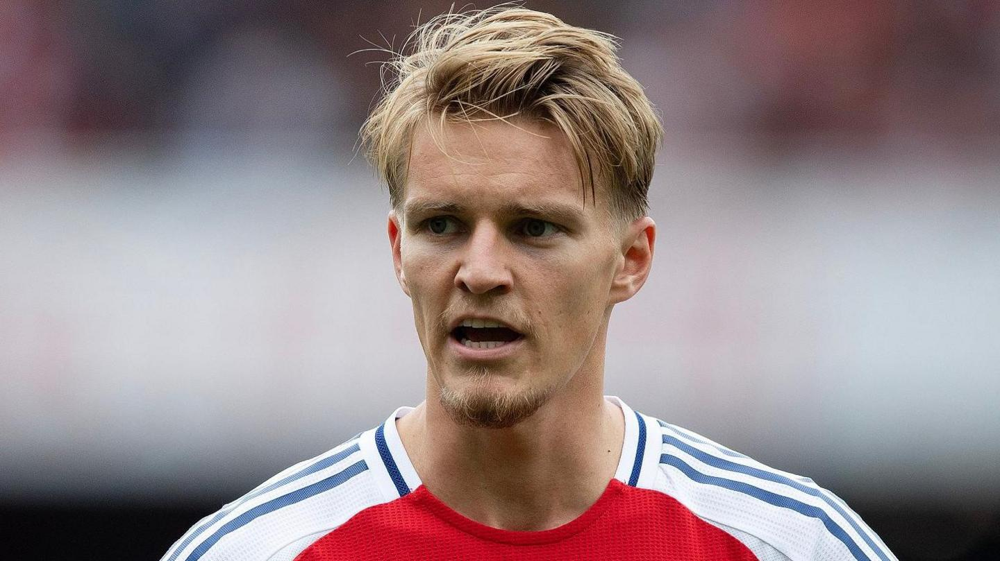
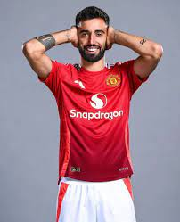
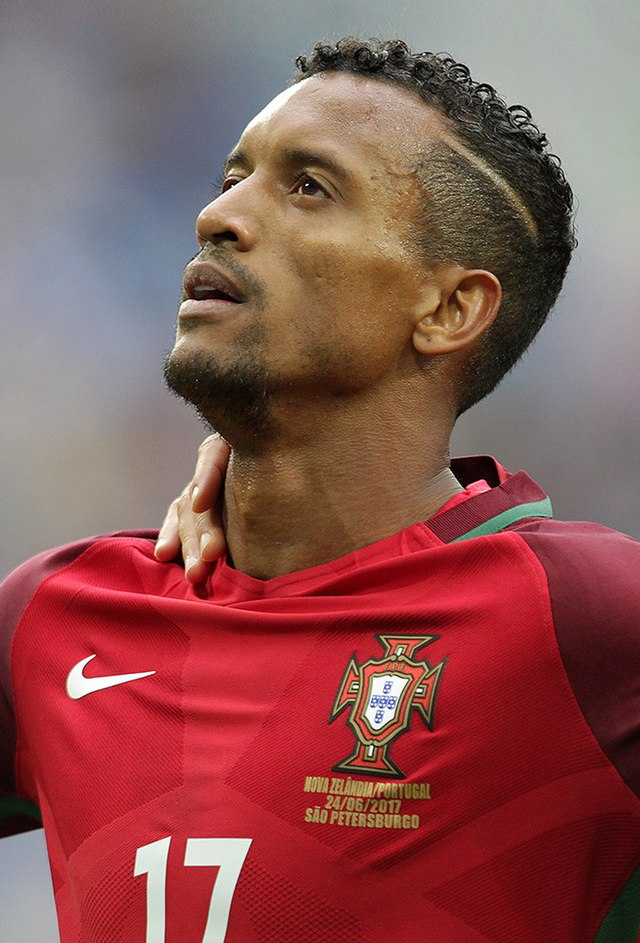
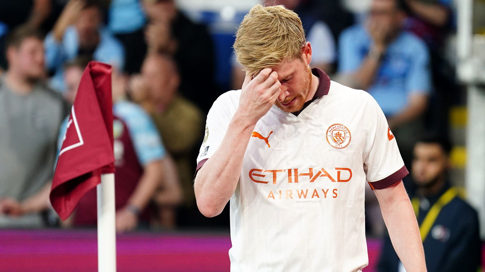
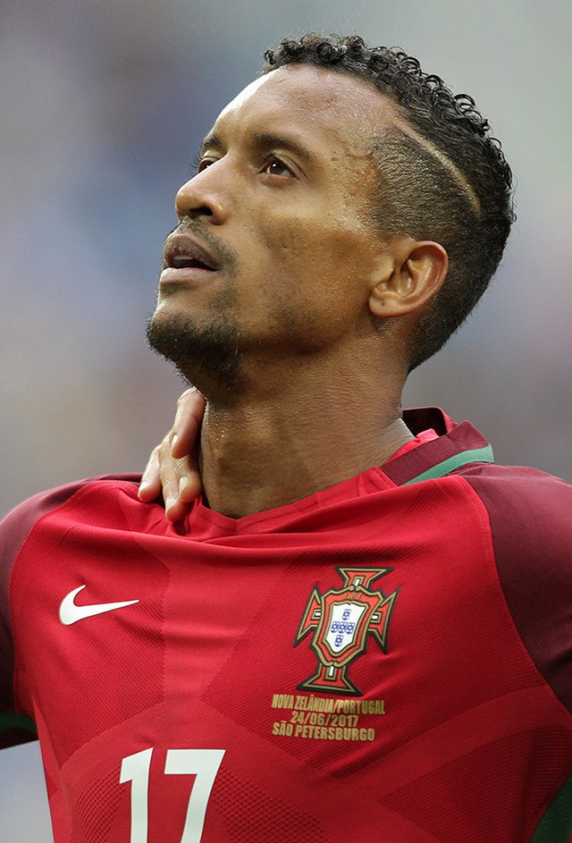
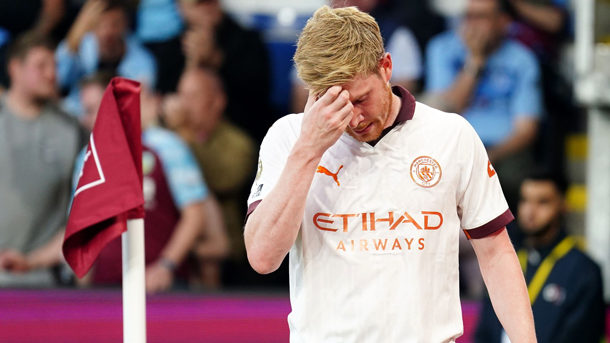

Here is a list of the top goal scorers from 2012-2018
The premier league has been witness of incredible talent namely:
Some photos to show the qualities goal creators in world football
 




 


